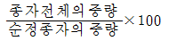
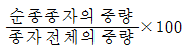
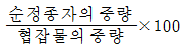
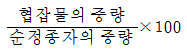
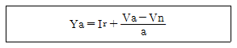

산림기사 (2005-03-06 기출문제)
1과목: 조림학
1. 파종상에서 해가림의 높이는 보통 얼마로 하는 것이 가장 좋은가?
- 10 ~ 20㎝
- 40 ~ 60㎝
- 80 ~ 100㎝
- 100 ~150㎝
(정답률: 47%)

2. 임연목의 가지치기를 하지 않는 이유 중 잘못된 것은?
- 강풍에 의한 내부 임목의 피해를 줄이기 위하여
- 임내의 탄산가스 농도를 높여 광합성을 촉진시키기 위하여
- 임내 수목의 뿌리를 튼튼히 발달시키기 위하여
- 임내 습도를 높여 미생물에 의한 낙엽분해를 촉진하기 위하여
(정답률: 48%)
3. 발근이 어려운 침엽수류 삽목번식에 있어서 발근율에 가장 큰 영향을 미치는 인자는?
- 삽수의 길이
- 삽목상의 종류
- 발근촉진제의 종류
- 모수의 나이
(정답률: 34%)
4. 종자의 순량률(純量率)을 구하는 공식에 해당하는 것은?




(정답률: 91%)
5. 임지가 평탄하지 못하고 지력차가 심하며, 삼림이 불규칙하여 일제림이 부분적으로 형성된 곳에 적합한 개벌작업의 한 방법은?
- 연속대상개벌
- 군상개벌
- 교호대상개벌
- 대면적개벌
(정답률: 55%)
6. 판갈이(상체) 밀도에 관한 설명 중 바른 것은?
- 묘목이 클수록 밀식
- 양수는 음수보다 밀식
- 땅이 비옥할수록 소식
- 잎과 가지가 확장하는 것은 밀식
(정답률: 60%)
7. 파종조림에 실패하는 가장 큰 원인은?
- 대립종자를 파종하므로
- 묘목의 뿌리가 너무 깊이 뻗으므로
- 동물이 종자를 먹으므로
- 종자를 많이 파종하므로
(정답률: 86%)
8. 순림(純林)의 장점이 아닌 것은 어느 것인가?
- 간벌 등 작업이 용이하다.
- 자연전지가 잘된다.
- 조림이 경계적으로 될 수 있다.
- 병충해에 강하다.
(정답률: 92%)
9. 맹아의 발아를 왕성하게 하기 위해서는 어느 계절에 벌채하는 것이 가장 유리한가?
- 봄
- 여름
- 가을
- 겨울
(정답률: 67%)
10. 다음 중 중림작업(中林作業)을 가장 잘 설명한 것은?
- 상층임관은 교림(喬林), 하층임관은 왜림(矮林)으로 구성하는 작업을 말한다.
- 나무 높이가 너무 크지도 적지도 않은 중경목 생산작업종이다.
- 산벌작업에서 중간(中間)에 벌채하는 작업종이다.
- 모수작업에서 도중 벌채하는 작업을 말한다.
(정답률: 87%)
11. 다음 중 택벌작업의 장점으로 보기 어려운 것은?
- 토지가 항상 나무로 덮여져 있어서 지력이 잘 유지된다.
- 상층목은 일광을 충분히 받아서 결실이 잘 된다.
- 양수와 음수 수종 모두 적용이 가능하다.
- 면적이 좁은 삼림에서 보속적 수확을 올리는 작업을 할 수 있다.
(정답률: 74%)
12. Alnus 는 다음 중 어느 나무의 속명인가?
- 버드나무
- 싸리나무
- 오리나무
- 전나무
(정답률: 83%)
13. 종자결실을 촉진하기 위해 일반적으로 사용하는 방법이 아닌 것은?
- 임분의 입목밀도 조절
- 질소, 인산, 칼륨의 시비
- 생장조절 물질의 엽면살포
- 충분한 관수
(정답률: 50%)
14. 다음 갱신법에 관한 용어 설명 중 가장 바른 것은?
- 소벌구의 모양은 일반적으로 원형이다.
- 소벌구는 측방성숙임분의 영향을 받는다.
- 산벌은 임목을 한번에 벌채하는 것이다.
- 모수는 갱신임지에 식재될 묘목의 양묘에 사용될 종자 생산을 위한 나무이다.
(정답률: 40%)
15. 알카리성 토양에 비교적 강한 수종은?
- 회양목
- 가문비나무
- 전나무
- 잣나무
(정답률: 70%)
16. 수관의 발달이 지나치게 왕성하고 넓게 확장한 나무의 수관급은?
- 1급목
- 2급목
- 3급목
- 4급목
(정답률: 42%)
17. 비료목에 대한 설명 중 틀린 것은?
- 잎에는 질소가 높은 농도로 축척되어 있다.
- 뿌리에서 근류균과 공생한다.
- 비료목에 해당되는 수종은 모두 콩과식물이다.
- 오리나무류, 싸리류 등이 대표적이다.
(정답률: 75%)
18. 우량 임목 종자가 갖춰야 할 생리적 특성이 아닌 것은?
- 후숙 완료된 신선한 종자
- 저장 조건이 우량한 종자
- 배유가 충만한 효율이 좋은 종자
- 수형목에서 채종한 종자
(정답률: 45%)
19. 사기(寺崎, 데라사끼)의 하층 간벌 설명으로 맞는 것은?
- 4급 및 5급만 벌채하는 방법이다.
- 우세목의 대부분을 벌채하는 방법이다.
- A종, B종, C종으로 구분된다.
- C종에서는 2급목의 대부분을 남긴다.
(정답률: 62%)
20. 산림생태계의 2차 생산물에 속하는 것은?
- 수체의 호흡량
- 낙엽의 고사량
- 동물의 배설물
- 잎의 순광합성량
(정답률: 58%)
2과목: 산림보호학
21. 다음 중 밤나무 줄기마름병 방제법이 아닌 것은?
- 동,상해에 주의한다.
- 줄기를 침해하는 해충을 구제한다.
- 중간기주 식물을 제거한다.
- 저항성 품종을 심는다.
(정답률: 82%)
22. 다음 수목 질병 중 병원이 진균인 것은?
- 대추나무 빗자루병
- 오동나무 빗자루병
- 벚나무 빗자루병
- 아카시나무 빗자루병
(정답률: 73%)
23. 흰가루병의 방제제로 적당한 약제는?
- 씨마네수화제(씨마진)
- 메타유제(메타시스톡스)
- 포스팜액제(다이메크론)
- 석회유황합제
(정답률: 28%)
24. 대기오염(煙害)의 육안적 감정에 의한 일반적 증상으로 볼수 없는 것은?
- 잎에 진한 녹색을 띤다.
- 묵은 잎부터 떨어진다.
- 나무의 끝부터 피해의 증상이 나타난다.
- 잎에 황화현상이 나타난다.
(정답률: 37%)
25. 솔나방을 구제하기 위하여 월동기 직전 나무줄기에 거적이나 가마니를 감아 유충을 유살하는 방법은 다음 중 어느 성질을 이용한 것인가?
- 먹이를 찾아 숨어드는 성질
- 잠복 장소를 찾아 숨는 성질
- 용화하기 위하여 찾아 드는 성질
- 번식 장소를 찾아 숨는 성질
(정답률: 50%)
26. 다음 중 표징(sign)에 속하는 것은?
- 괴사
- 균핵
- 반점
- 위축
(정답률: 62%)
27. 병원균 중에서 병자각(柄子殼) 및 병포자(柄胞子)를 형성 하는 것은?
- 향나무 녹병균
- 소나무 잎떨림병균
- 오리나무 갈색무늬병균
- 밤나무 흰가루병균
(정답률: 39%)
28. 잣나무 털녹병에 걸린 송이풀에서 잣나무로 날아가는 포자는?
- 여름포자
- 겨울포자
- 녹포자
- 담자포자
(정답률: 27%)
29. 다음 중 밤나무혹벌의 천적은?
- 알좀벌
- 먹좀벌
- 수중다리무늬벌
- 남색긴꼬리좀벌
(정답률: 77%)
30. 솔잎혹파리 피해 방제를 위하여 다이메크론 수간주사를 하는데 가장 효과적인 시기는?
- 2월
- 7월
- 10월
- 12월
(정답률: 77%)
31. 다음 중 산불의 소화약제(消火藥劑)로서 이용되지 않는 것은?
- 벤토나이트
- 보르도액
- 인산암모늄
- 중탄산소오다
(정답률: 85%)
32. 오동나무 빗자루병의 매개충은?
- 담배장님 노린재
- 복숭아 혹진딧물
- 목화 진딧물
- 오리나무 잎벌레
(정답률: 74%)
33. 다음 임업 해충 중 잎을 가해하는 해충은?
- 솔나방
- 박쥐나방
- 밤바구미
- 미끈이하늘소
(정답률: 79%)
34. 다음 중 혹(충영)을 형성하는 해충은?
- 텐트나방
- 밤나무순혹벌
- 오리나무잎벌레
- 박쥐나방
(정답률: 74%)
35. 마이코플라스마(파이토플라스마)에 의한 병의 내과요법으로 많이 이용되고 있는 약제는?
- 옥시테트라싸이클린(oxytetracycline)
- 사이클로핵시마이드(cycloheximide)
- 베노밀(benomyl)
- 스트렙토마이신(streptomycin)
(정답률: 100%)
36. 다음 중 군집하여 임목을 고사시키는 것은?
- 할미새
- 동박새
- 딱다구리
- 가마우지
(정답률: 48%)
37. 다음 중 해충의 임업적 방제법으로 볼 수 있는 것은?
- 해충의 발생을 어렵게 하도록 임목의 밀도를 조절한다.
- 훈증제를 사용한다.
- 방사선을 이용한다.
- 차단법을 이용한다.
(정답률: 75%)
38. 솔잎혹파리의 생활사에 관한 설명으로 가장 알맞는 것은?
- 1년에 1회 발생하며 유충으로 땅 속 또는 혹(충영)속에서 월동한다.
- 1년에 2회 발생하며 지피물 속에서 성충으로 월동한다.
- 1년에 1회 발생하며 알로 혹(충영) 속에서 월동한다.
- 1년에 2회 발생하며 성충으로 혹(충영) 속에서 월동한다.
(정답률: 95%)
39. 다음 중 내염성(耐鹽性) 수종이 아닌 것은?
- 자귀나무
- 소나무
- 향나무
- 해송
(정답률: 39%)
40. 방화선 설치에 관한 사항 중 가장 옳은 것은?
- 방화선의 나비는 10m 이하로 한다.
- 방화선에 의하여 구획되는 삼림면적은 40ha 이하로 한다.
- 피나무, 고로쇠나무 등으로 방화수대를 만든다.
- 방화선 구축시는 지면을 그대로 두어 관목이나 잡초가 자라게 한다.
(정답률: 75%)
3과목: 임업경영학
41. 생산성 원칙에 따라 임업경영을 할 때 단위 면적당 평균적으로 가장 많은 목재를 생산할 수 있는 시기는?
- 총평균생장량이 최고인 때
- 연년생장량이 최고인 때
- 정기평균생장량이 최고인 때
- 총 생장량이 최고인 때
(정답률: 63%)
42. 벌구영급림으로 경영되는 임분에 대하여 벌기령까지의 각 비용과 수익에 대한 현재가를 이자율 5%를 적용하여 계산한 결과는 다음과 같았다. 조림비:50만원, 관리비:30만원, 지대:40만원, 1차간벌수익:45만원, 2차간벌수익:40만원, 주벌수익:100만원. 이 임분의 투자가치를 결정하기 위하여 순현재 가치법을 사용하면 이 임분의 순현재가(netpresent worth)는 얼마인가?
- 65만원
- 120만원
- 185만원
- 3⑤만원
(정답률: 56%)
43. 임분이 성립하여 성숙기까지 이르는 계획적 연수는?
- 벌채령
- 벌기령
- 윤벌령
- 경제령
(정답률: 75%)
44. 수확조절(수확예정)방법중의 하나인 법정 축적법의 보기 공식에서 I 는?

- 연간 생장율
- 작업급의 생장량
- 연간 가치 생장량
- 연간 벌채량과 생장량과의 차이
(정답률: 43%)
45. 우리나라에서는 전국 산림을 대상으로 10년마다 계획을 수립하는데 임업경영의 조직별로 산림기본계획, 지역산림계획, 영림계획을 수립한다. 다음 중 영림계획에서 수립하는 것은?
- 주요 임산물의 수요공급에 대한 장기전망
- 풀베기, 간벌 및 기타 육림에 관한 사항
- 지역의 삼림현황에 관한 사항
- 삼림의 합리적 이용과 삼림자원의 배양에 관한 사항
(정답률: 58%)
46. 손익분기점의 전제 및 내용으로 적절치 못한 것은?
- 이익도 손실도 발생하지 않는 생산수준이다.
- 생산의 효율성이 다양한 것을 전제로 한다.
- 모든 비용을 고정비와 변동비로 구분할 수 있어야 한다.
- 고정비용은 생산 수준에 관계없이 100% 생산능력까지 일정해야 한다.
(정답률: 67%)
47. 임목의 부분에 따른 생장량의 종류에 해당되지 않는 것은?
- 직경생장
- 단면적생장
- 재적생장
- 연륜생장
(정답률: 42%)
48. 공공경제적 입장에서의 보속의 필요성에 해당되는 것은?
- 재정의 합리화를 기할 수 있다.
- 유리한 시장을 확보할 수 있다.
- 숙련기술자를 사용할 수 있다.
- 목재의 수요에 대한 연년의 균등공급이 가능하다.
(정답률: 70%)
49. 수간 석해를 할 때 원판 채취 방법 중 틀린 것은?
- Huber식에 의한 방법은 흉고이상은 2m 마다 원판을 채취하고 최후의 것은 1m가 되도록 한다.
- 원판을 채취할 때는 수간과 직교하도록 한다.
- 원판의 두께는 10㎝가 되도록 한다.
- 측정하지 않을 단면에는 원판의 번호와 위치를 표시하여 둔다.
(정답률: 50%)
50. 매년의 벌채 수익금에서 10년간 상환하기로 하고 임도를 축조하고자 한다. 매년의 상각액(償却額)을 계산하는 공식은?
- 유한정기이자 전가식
- 유한정기이자 후가식
- 유한연년이자 전가식
- 유한연년이자 후가식
(정답률: 37%)
51. 임목의 시가(매매가) 결정과 관련이 없는 것은?
- 원목시장가
- 벌채운반비
- 조림무육관리비
- 기업이익
(정답률: 50%)
52. 평가하려고 하는 임목의 임령이 벌기(u)라고 하면 임목기망가의 값은?
- 주벌수확(Au) - 지대 - 관리비
- 주벌수확(Au) + 간벌수확의 전가합계
- 주벌수확(Au) + 간벌수확의 후가합계
- 주벌수확(Au)과 같다.
(정답률: 20%)
53. 다음 중 자연휴양림 내 풍치보호지구의 시업방법으로 가장 적절한 것은?
- 원칙적으로 벌채를 하지 않는다.
- 벌채는 원칙적으로 택벌법에 의한다.
- 지구내 산림을 보속생산체제로 점차 유도해 간다.
- 가지치기, 제벌 등의 무육작업을 강도있게 시업한다.
(정답률: 70%)
54. 임분 재적 측정 방법에서 표본조사법의 표본점을 추출할 때 우리나라에서 주로 사용하는 방법은?
- 임의 추출법
- 계통적 추출법
- 층화 추출법
- 부차 추출법
(정답률: 59%)
55. 임반구획의 이유에 해당되지 않는 것은?
- 삼림내부 및 도면상에서 임지의 위치를 명백히 알게한다.
- 지종구분(地種區分)이 상이할 때
- 측량 및 임지면적을 계산하는데 편리하다.
- 절개선에 따라서 이용하는데 편리하다.
(정답률: 78%)
56. 제재목으로서 가로 4치, 세로가 2치, 길이가 12자인 재적을 재(才)로 구하면 얼마인가?
- 8재
- 4재
- 2재
- 1재
(정답률: 53%)
57. 임업경영의 수익성, 공공성, 보속성의 원칙을 실현하고 달성하기 위한 수단적이고 기초적인 지도원칙으로서 임목의 생활 및 생장에 관해 자연법칙을 존중하여 경영, 생산하는 원칙은?
- 합자연성의 원칙
- 환경보전의 원칙
- 생산성의 원칙
- 경제성의 원칙
(정답률: 88%)
58. 토지기망가의 크기에 영향을 미치는 인자가 아닌 것은?
- 주벌수확
- 토지매입대금
- 조림비
- 이율
(정답률: 50%)
59. 임업이율의 성격을 기술한 것 중 옳지 않은 것은?
- 임업이율은 대부이자가 아니고 자본이자이다.
- 임업이율은 현실이율이 아니고 평정이율이다.
- 임업이율은 명목적 이율이 아니고 실질적 이율이다.
- 임업이율은 장기이율이다.
(정답률: 95%)
60. 다음 중 자산, 부채, 자본의 관계를 잘 나타낸 것은?
- 자산 = 자본 - 부채
- 자산 = 자본 + 부채
- 자산 = 부채 - 자본
- 자산 = 자본 ÷부채
(정답률: 83%)
4과목: 임도공학
61. 집재가선에서 중간지주가 있고, 본줄을 지지하는 받침기둥이 있는 경우, 시브의 축을 지지하는 측판이 한쪽만 있는 구조로 된 반송기를 무엇이라고 하는가?
- 보통 반송기
- 양지식 반송기
- 편지식 반송기
- 계류형 반송기
(정답률: 58%)
62. 임도설치시 가장 많이 이용되는 곡선 설치 방법은?
- 편각법
- 교회법
- 교각법
- 진출법
(정답률: 71%)
63. 전압기계로 적당치 않는 것은?
- 로드롤러
- 모터그레이드
- 진동콤팩트
- 타이어롤러
(정답률: 65%)
64. 중부 유럽 여러 나라에서 널리 적용되고 있으며, 아주 간단하게 삭장이 되어 급경사지에서 이용되는 삭장방식으로 서, 내림집재 및 올림집재 어느 쪽도 가능하고 계류형 반송기와 스토퍼를 사용하면 장거리집재도 가능한 삭장방식은 어느 것인가?
- 앤드리스타일러시스템
- 폴링블록시스템
- 앤드리스시스템
- 스너빙시스템
(정답률: 42%)
65. 목질사료의 이용방법에 해당되지 않는 것은?
- 분쇄 또는 폐재로 생성된 톱밥은 그대로 이용하지 않는다.
- 톱밥을 산 또는 알칼리로 산화처리 한다.
- 목재부후균의 접종에 의한 생화학적 분해작용을 응용한다.
- 펄프·제지공정의 부산물로 생성된 미세분을 이용한다.
(정답률: 39%)
66. 임업기계비용을 계산하는 방법에 속하지 않는 항목은?
- 감가상각비
- 수리유지비
- 임도유지비
- 인건비
(정답률: 47%)
67. 다음 중 야구배트로 가장 널리 사용되는 수종은?
- 가래나무
- 고로쇠나무
- 물푸레나무
- 느티나무
(정답률: 58%)
68. 임도의 돌쌓기에서 일반적으로 메쌓기 구조물의 경우는 표준물매를 얼마로 하는가?
- 1 : 0.3
- 1 : 0.5
- 1 : 1
- 1 : 1.5
(정답률: 70%)
69. 임도의 유지관리에 관한 설명 중 바르지 못한 것은?
- 항상 임도상태를 점검해야 한다.
- 결함이 있을시에는 즉시 보수공사를 한다.
- 노면의 정제는 노면이 습윤한 상태보다 건조한 상태일 때 실시하는게 좋다.
- 수시로 노면을 정제해서 바퀴자국이나 큰 골을 없앤다.
(정답률: 95%)
70. 벌목과 운재계획에서 실지조사의 항목에 해당되는 내용은 어느 것인가?
- 벌목 ·조재된 통나무에 대한 반출방법에 대해 조사 한다.
- 벌목구역에 대한 개벌 및 택벌별 면적 ·수종 ·경급별 본수 ·재적 ·평균수고 등을 조사한다.
- 벌목구역의 확인과 임황 및 지황을 조사한다.
- 기존 실행결과에 대한 문제점을 파악한다.
(정답률: 28%)
71. 트랙터의 집재 운반 중 단점에 해당하는 것은?
- 소수의 작업자로 실행할 수 있다.
- 운전이 비교적 용이하다.
- 급경사지에서 실행할 수 없다.
- 견인력이 크다.
(정답률: 95%)
72. 다음의 목재생산시스템 중에서 단목생산을 주 목표로 하는 것은?
- 하베스터에 의한 작업시스템
- 펠러번쳐에 의한 작업시스템
- 타워야더에 의한 작업시스템
- 그래플스키더에 의한 작업시스템
(정답률: 77%)
73. 면적이 2,000,000m2인 산림에 임도가 100km가 개설되어 있다. 이때 임도밀도는?
- 0.5 m/ha
- 5 m/ha
- 50 m/ha
- 500 m/ha
(정답률: 23%)
74. 다음 중 대나무의 예비 가공인 것은?
- 대나무의 접합
- 대나무의 착색
- 대나무의 연화처리
- 대나무 껍질의 연마
(정답률: 34%)
75. 목재의 벌채 계절은 일반적으로 다음 어느 계절이 가장 좋은가?
- 여름
- 가을
- 겨울
- 여름·가을
(정답률: 70%)
76. 임도의 시공시 옳은 사항은?
- 흙깎기 비탈면 위에 돌림수로를 설치한다.
- 흙쌓기 비탈면 아래 돌림수로를 설치한다.
- 흙쌓기 비탈면 위에 옆도랑을 설치한다.
- 횡단배수구는 1,000m 간격으로 설치한다.
(정답률: 29%)
77. 임도의 횡단 선형에서 가장 긴 길이를 차지하는 것은?
- 옆 도랑 나비
- 길 어깨 나비
- 측구 나비
- 차도 나비
(정답률: 79%)
78. 기계가 서 있는 지면보다 높은 곳을 파내는 데 적당하므로 굴착기 중에서 가장 기본이 되는 것은 어느 것인가?
- 파워셔블
- 드랙라인
- 백호우
- 클램셀
(정답률: 45%)
79. 중력에 의한 집재 방법이 옳게 짝지어진 것은?
- 토수라, 플라스틱수라
- 스키더집재, 야더집재
- 가선집재, 팬집재
- 목마, 궤도
(정답률: 38%)
80. 경사도에 의한 집재방법의 구분으로서 가선 또는 트랙터집재의 한계 경사도는?
- 0 ∼ 29%
- 30 ∼ 60%
- 61 ∼ 80%
- 60% 초과
(정답률: 62%)
5과목: 사방공학
81. 산지에서 비탈면 붕괴 방지를 위해 콘크리트 옹벽 시설시가장 유의할 점으로 맞는 것은?
- 혼합비율을 1:3:1로 유지할 필요가 있다.
- 옹벽의 경사도는 비탈면 접촉부를 넓게 한다.
- 배수구를 적절하게 뚫어 주어야 한다.
- 반드시 철근으로 강도를 높혀 주어야 한다.
(정답률: 22%)
82. 관리자는 시설물들이 좋은 상태를 유지하도록 노력해야 하며, 이는 이용객의 만족 및 휴양 경험의 질에 크게 영향을 준다. 시설물의 유지관리에서 경제성을 고려한 네 가지 구성은?
- 시간, 인력, 장비, 자재
- 시간, 인력, 안전, 자재
- 시간, 인력, 장비, 설계
- 시간, 인력, 안전, 설계
(정답률: 43%)
83. 정상적인 산림경영에서 국민의 보건휴양과 정서함양을 위한 야외휴양공간 및 자연교육장의 역할과 산림소유자의 소득을 향상시키기 위한 목적으로 조성, 관리되는 곳은 어디인가?
- 국립공원
- 관광지
- 자연휴양림
- 자연보도
(정답률: 91%)
84. 휴양지의 서비스 관리에 제한을 주는 인자로 가장 옳은 것은?
- 관리자의 목표, 전문가적 능력, 이용자의 선호, 법규
- 관리자의 자질, 전문가적 능력, 이용자의 태도, 법규
- 관리자의 자질, 전문가적 능력, 이용자의 선호, 법규
- 관리자의 목표, 전문가적 능력, 이용자의 태도, 법규
(정답률: 39%)
85. 산림의 공익기능 중 휴양급부의 설명으로 옳은 것은?
- 수량화 할 수 있는 국민보건적 급부이다.
- 산림면적이 감소되면 휴양급부도 감소된다.
- 산지에서 가격을 매길 수 있는 생산과 용역이다.
- 산림면적이 같은 경우 생활수준이 향상되면 휴양급부는 커진다.
(정답률: 50%)
86. 레크레이션의 사회계획으로서의 레크리에이션 개념으로 관광 레크리에이션에 있어 방문객의 행태가 개인적인 만족과 이득을 위한 질서있는 움직임을 개념적으로 설명한 동기 - 편익모델을 제시한 학자는?
- Jubenville
- Gold
- Maslow
- Driver
(정답률: 27%)
87. 휴양지의 연간 이용율 산정방식은?
- 일수용력 x 100 / 연간이용자수 / 가동일수
- 연간이용자수 x 100 / 일수용력 / 가동일수
- 가동일수 x 100 / 연간이용자수 / 일수용력
- 일수용력 x 100 / 연간이용자수 / 가동월수
(정답률: 75%)
88. 수용력의 개념을 현실적으로 적용시키는데 나타난 문제점을 보완하기 위해 발생한 개념으로 휴양 이용에 의한 변화가 지역마다 다르다는 것에 기반을 둔 개념은?
- 휴양기회 스펙트럼(ROS)
- 서비스의 질(SQ)
- 환경 해설(EI)
- 허용가능한 변화의 한계(LAC)
(정답률: 23%)
89. 현행 관련 법규상 사유림에서의 휴양림 지정 대상 산림면적 규모는?
- 10ha 이상
- 20ha 이상
- 30ha 이상
- 50ha 이상
(정답률: 25%)
90. 표적 마케팅(Target Marketing) 이란?
- 대다수 구매자를 대상으로 대량생산, 대량유통, 대량판매를 목적으로 하는 시장 전략이다.
- 여러 속성 집단별로 세분하여 각 속성 구룹에 맞는 상품을 개발, 유통, 판매하는 시장 전략이다.
- 다양한 상품의 디자인, 품질, 크기로 구매자의 선택폭을 넓게하는 시장 전략이다.
- 경영 목표에 따라 상품 생산 보다는 판매에 치중하는 시장 전략이다.
(정답률: 84%)
91. 가용용량/1인 1일소비량으로 계산되며 주로 경제적 및 하부시설 수용력 추정에 이용되는 것은?
- 임계용량
- 실비율
- 일간용량
- 이용비율
(정답률: 42%)
92. 환경해설의 원칙과 거리가 먼 것은?
- 환경해설의 궁극적 목적은 자극이므로 단순한 지식 전달에 그쳐서는 안된다.
- 환경해설 대상을 지적 수준이 다르다고 하여 성인과 어린이를 구분해서는 안된다.
- 환경해설은 지엽적이지 않은 전체적인 안목에서 문제를 설명해야 한다.
- 환경해설은 일정한 틀이 없으므로 주제, 상황에 따라 여러 가지 도구와 예를 사용해야 한다.
(정답률: 75%)
93. 휴양지를 효율적으로 보호, 이용, 관리하기 위해 자연공원법이 규정하고 있는 용도지구 구분이 아닌 것은?
- 자연보존지구
- 자연환경지구
- 취락지구
- 환경보전지구
(정답률: 42%)
94. 레크리에이션 수요를 산출하는데 고려해야 할 요인으로서 거리가 먼 것은?
- 관리 주체
- 잠재적 이용자
- 대상지역
- 접근성
(정답률: 80%)
95. 허용 가능한 변화의 한계를 결정하는 과정에 포함되지 않는 것은?
- 측정 가능한 일련의 속성에 유지해야 하는 상태를 구체화
- 현재의 상태에 맞게 최초 설정한 목적 상태를 변화
- 목적 상태로의 변화를 위한 대안 개발
- 관리 대안에 대한 평가 및 모니터링
(정답률: 50%)
96. 환경해설의 목적이 아닌 것은?
- 자연, 산림에 대한 교육
- 휴양 자원의 현명한 사용과 관리
- 야외(산림)휴양 서비스 제공기관의 목적이나 하는 일을 홍보
- 수익성 보장
(정답률: 91%)
97. 휴양림의 관리운영 체계 중 행정의 효율성과 재원확보의 합리성의 장점을 가지고 있으나 획일적인 운영 형태가 나타날 수 있는 형태는?
- 민간 주도형 체인화 방식
- 민간 주도형 회원제 방식
- 지방자치단체 주도형
- 정부주도형
(정답률: 69%)
98. 자연 휴양림에 관한 설명 중 적절하지 못한 것은?
- 자연공원과 더불어 대표적 야외휴양 제공시스템이다.
- 산림소유주의 소득증대에도 목적이 있다.
- 자연공원법의 규제를 받는다.
- 자연 휴양림의 경영은 다목적 경영의 일환이다.
(정답률: 57%)
99. 자연휴양림 시설 중 피크닉장에 40단위(그룹)의 이용객을 수용하는데 소요되는 면적은 어느 정도인가?
- 0.5 ha
- 1 ha
- 2 ha
- 4 ha
(정답률: 38%)
100. 산림법상 자연휴양림으로 지정할 수 있는 산림으로 가장 적합한 것은?
- 지형적으로 우수한 경관자원을 가진 산림
- 산촌이 형성된 주변의 산림
- 임상이 울창한 산림
- 개발이 되지 않은 산림
(정답률: 20%)